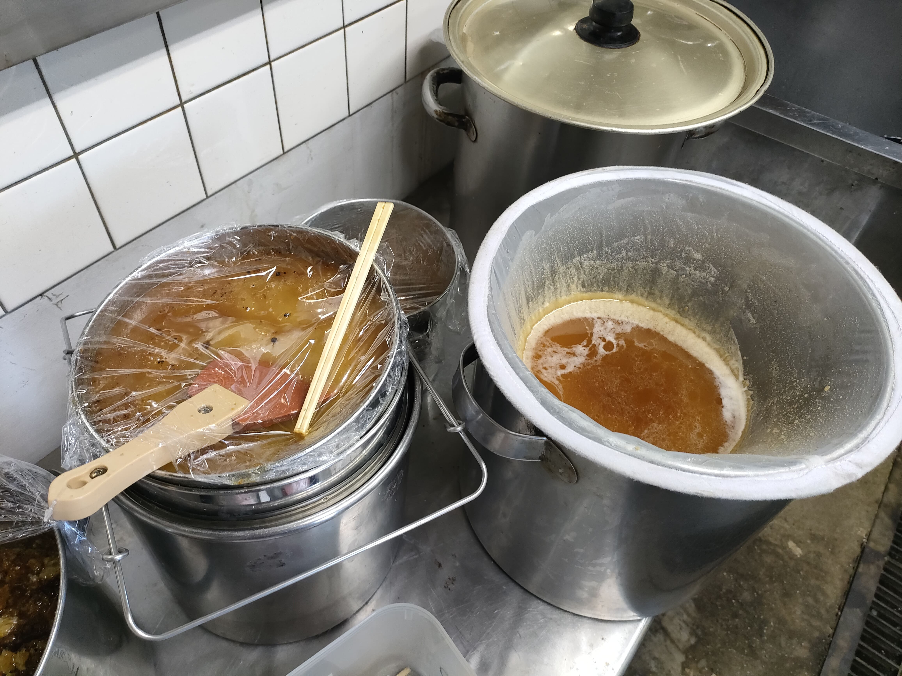

百花乃恵 桜
ここでしか採れない、この土地でしか味わえない
唯一無二の「桜区テロワール」
🐝 「百花乃恵 桜」（サ・ク・ラ）と（桜 プレミアム）
日本蜜蜂は、その土地の様々な花から蜜を集める「百花蜜」を生み出すことで知られ
「天然の良薬」とも称されるほど滋養分豊富なハチミツと言われています。


🐝 なぜ日本ミツバチの蜂蜜は “ 貴重 ” なのか？
世界三大「 偽装食品 」の一つと言われている「蜂蜜」産業...
日本のハチミツ消費は 約93%が輸入品。（その内、約80%が中国産）
さらに国内で生産される約7%のハチミツは「※ 西洋ミツバチ」が集めたハチミツです。
日本蜜蜂と西洋ミツバチの集めるハチミツの違いを知っている人は極わずかではないでしょうか？
日本の在来種である「 日本蜜蜂 」。
その蜂蜜シェアは市場全体の1%にも満たない為、極めて貴重な存在...
尚更、本物の日本蜜蜂のハチミツをお召し上がりになった方は少ないと思います。
🐝 日本ミツバチと西洋ミツバチのちがい
| 項目 | 日本ミツバチ 🐝 | 西洋ミツバチ 🐝 |
|---|---|---|
| 種類 | 在来種（野生に近い） | 外来種（養蜂向け） |
| 採蜜量 | 少ない（年1〜2回） | 多い（年5〜6回） |
| 集める蜜 | 花の蜜だけ | 花の蜜が中心（補助エサも） |
| 性格 | おとなしく繊細 | 活発で生産性高い |
| 特徴 | 百種類以上の花の蜜／味が深い | 単一花が多く味が均一 |
🐝「百花蜜とは？」
さまざまな花々から集めた蜜が混ざり合った「自然そのままの蜂蜜」のこと。
とくに日本ミツバチが集めた「百花蜜」は、味や香りが一つとして同じにならない一期一会の
“ 天然ブレンド ”です。
日本ミツバチは、四季折々の花の蜜だけを選んで集めるためその風味は「豊かで深く」香り高いのが特徴です。


🐝「加熱しない・混ぜない・加工しない」が、本物のハチミツ
本製品は、非加熱・無添加。
蜜を絞る際は2種類の方法で仕上げます。
採蜜は「 ① 圧搾濾過 ② 垂れ蜜濾過 」の二つの方法があり
① 巣をそのまま絞る圧搾濾過 ＝ （百花乃恵 桜）
② ひたすらポタポタ蜜が落ちるのを待つ垂れ蜜濾過 ＝（百花乃恵 桜プレミアム）
同じ巣から蜜を取り出す手法でも透明度や風味も異なってきます。
様々な花の蜜がブレンドされた、滋養豊かな味わいは未だ人間には作り出せず
「腐ることのない」天然の良薬を是非お召し上がってみて下さい！


🐝[ HACCPに沿った衛生管理 ] ハチミツボトルが作られるまで
作業場で濾過したハチミツは手作業でボトル詰めし
丁寧に一本づつ蜜蜂さんに「感謝」して皆様へお届けします。



採蜜ボトル詰め製造所
さいたま市桜区西堀3-25-6